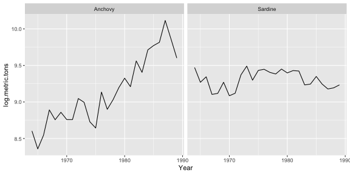

class: center, middle, inverse # Forecasting Time Series ## Eli Holmes .large[Northwest Fisheries Science Center
National Oceanic and Atmospheric Administration
Seattle, WA]
.futnote[eli.holmes@noaa.gov]
.citation[@eli_holmes]
Forecasting Time Series
This week we will learn a number of standard approaches for forecasting from time series alone–meaning without any covariates or exogenous variables. At the end of the week, we will address how to incorporate covariates into a time series forecast.
Many approaches are available for non-seasonal modeling
.pull-left.left[ Stergiou and Christou 1995
- Time-varying regression
- Box-Jenkins models, aka ARIMA models
- Multivariate time-series approaches
- Harmonic regression
- Dynamic regression
- Vector autoregression (MAR)
- Exponential smoothing (2 variants)
- Exponential surplus yield model (FOX) ]
.pull-right.left[ Georgakarakos et al. 2006
- Box-Jenkins models, aka ARIMA models
- Artificial neural networks (ANNs)
- Bayesian dynamic models
Lawer 2016
- Box-Jenkins models, aka ARIMA models
- Artificial neural networks (ANNs)
- Exponential Smoothing (6 variants) ]
Forecasting Time Series
We will focus on a subset of these methods. There are methods have a very long tradition (ARIMA), are often found to be the best or equally best method (Exponential smoothing), are non-parametric and recently used in a number of fisheries papers (EDM), and are commonly used in many variants (DLM):
- Time-varying regression
- Box-Jenkins models, aka ARIMA models
- Exponential Smoothing
- Empirical dynamic modeling (EDM)
- Dynamic linear modeling (DLM)
Stergiou and Christou 1996
I will demonstrate these methods by replicating the work in Stergiou and Christou (1996) Modelling and forecasting annual fisheries catches: comparison of regression, univariate and multivariate time series methods. Fisheries Research 25: 105-136.
.center[
!(./figs/StergiouChristou1996.png)
]
Data
We will use the annual landings data from Hellenic (Greek) waters that were used in Stergiou and Christou (1996).
Stergiou and Christou analyzed 16 species. We will look two of the species: Anchovy and Sardine.
Stergiou and Christou used the data from 1964-1989. We have the data up to 2007, but will focus mainly on 1964-1989 (the first half of the time series) to replicate Stergiou and Christou’s analyses.

Area where data were collected

Statistical Reports

Statistical Report Table IV
Load the data as follows and use only the 1964-1989 data.
load("Data/landings.RData")
landings$log.metric.tons = log(landings$metric.tons)
landings = subset(landings, Year <= 1989)
landings = subset(landings, Species %in% c("Anchovy","Sardine"))
library(ggplot2)
ggplot(landings, aes(x=Year, y=log.metric.tons)) +
geom_line() + facet_wrap(~Species)